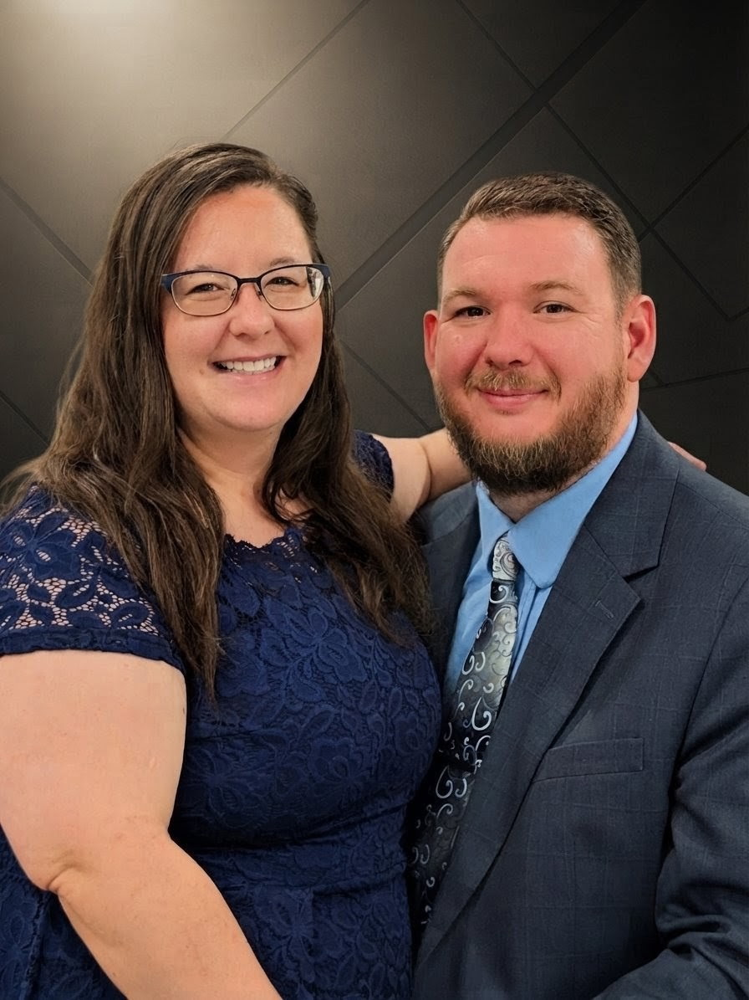

The family behind the lens at Baseline Cinematic.

Based right here in the Peoria area, Baseline Cinematic provides high-end aerial and ground videography for commercial marketing, real estate, and brand storytelling. We are a local husband-and-wife team, and we treat every property we film with the care and attention to detail it deserves.
Michael Cunningham – Lead Pilot & Editor: As an FAA Part 107 Certified Remote Pilot, Michael handles all cinematic aerial drone operations. He also manages the post-production editing, color grading, and sound design to ensure your final video looks flawless.
Judith Cunningham – Lead Ground Operator: Judith runs our stabilized handheld camera systems. She captures the ultra-smooth, high-resolution interior walkthroughs that make properties feel expansive and inviting.
Baseline Cinematic is incredibly proud to be a family-owned operation. Beyond the lens, our faith and our four children are at the core of everything we do. As active members of our local Christian church here in Pekin, we believe in treating every client with honesty, integrity, and a strict commitment to excellence. When you hire us, you are getting a dedicated team focused on bringing your vision to life.